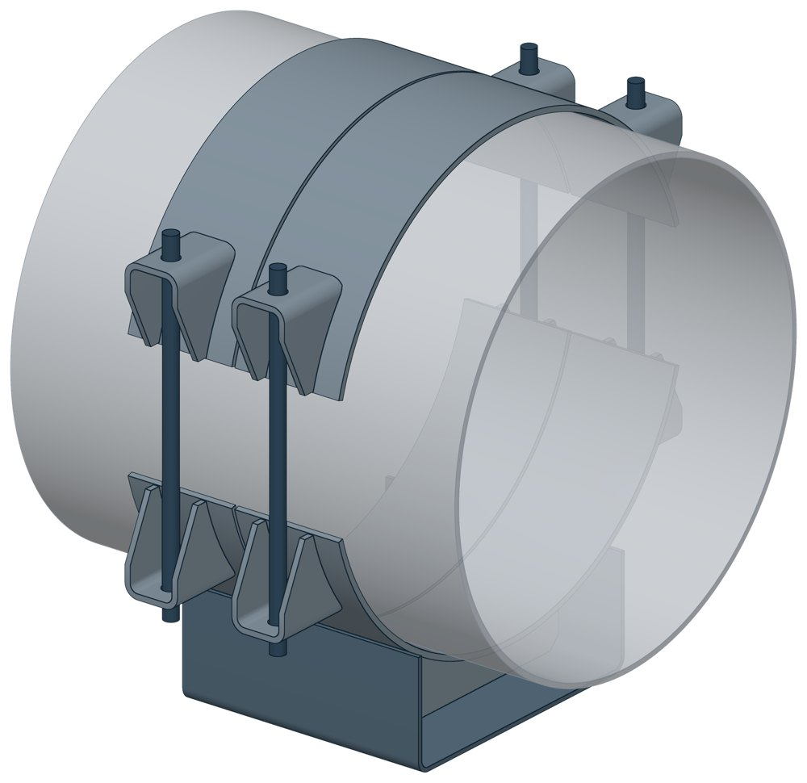
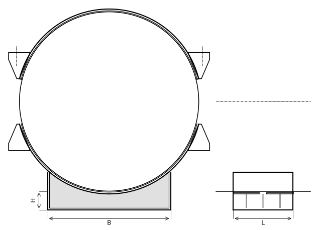

Опора скользящая бугельная ТС-627
Скользящая бугельная опора: труба лежит на подушке сварного корпуса, сверху её накрывает бугель — такая же подушка с ушками. Корпус и бугель стянуты шпильками; к трубе ничего не приваривают.

- Диаметр трубы Dн
- 377–1420 мм
- Документ
- Серия 5.903-13 вып. 8-95
- Исполнений
- 81
- Вертикальная нагрузка
- до 600 кН
- Масса
- 15–243 кг
- 3D-модели
- у всех исполнений
Применение и монтаж
Назначение: где применяется
Трубопроводы тепловых сетей Dн 377–1420 мм. Вертикальная нагрузка от 70 до 600 кН — по диаметру. Скользящие опоры применяют при всех способах прокладки и для всех диаметров (СП 124.13330.2012, п. 10.34). С диэлектрическими прокладками из паронита опора изолирует трубу от блуждающих токов — мера защиты по п. 13.9 того же СП.
Монтаж: как устанавливается
Корпус ставят на опорную конструкцию, трубу укладывают на подушку, сверху ставят бугель и стягивают его с корпусом шпильками через ушки. Для электроизоляции между трубой и подушками кладут паронитовые прокладки. Корпус скользит по опорной конструкции вместе с трубой; по перечню альбома длина 340 мм рассчитана на перемещение до 220 мм, 680 мм — до 560 мм.
Отличия от соседних типов
Диаметр меньше 377 мм — хомутовая ТС-626, корпус у неё тот же. Можно варить к трубе — приварная ТС-624. Неподвижная бугельная опора на тех же диаметрах — ТС-671.
Габаритная схема ТС-627

Состав комплекта на одну опору
| Корпус сварной (скоба, подушка, рёбра, ушки) | 1 шт. |
| Бугель (подушка с двумя ушками) | 1 шт. |
| Шпилька | 2 шт. |
| Гайка | 8 шт. |
Таблица исполнений ТС-627
| Обозначение | Код ПРОМБУРГ | Dнмм | Вертикальная нагрузкакН | Ширина Вмм | Ширина В1мм | Высота Нмм | Высота Н1мм | Длина Lмм | Массакг | 3D |
|---|---|---|---|---|---|---|---|---|---|---|
| ТС-627.00.000 | ПБ-627-0377-1 | 377 | 70 | 280 | 485 | 100 | 292 | 170 | 15 | 3D |
| ТС-627.00.000-01 | ПБ-627-0377-2 | 377 | 70 | 280 | 485 | 150 | 342 | 170 | 16 | 3D |
| ТС-627.00.000-02 | ПБ-627-0377-3 | 377 | 70 | 280 | 485 | 200 | 392 | 170 | 17 | 3D |
| ТС-627.00.000-03 | ПБ-627-0426-1 | 426 | 70 | 280 | 540 | 100 | 318 | 170 | 15 | 3D |
| ТС-627.00.000-04 | ПБ-627-0426-2 | 426 | 70 | 280 | 540 | 150 | 368 | 170 | 18 | 3D |
| ТС-627.00.000-05 | ПБ-627-0426-3 | 426 | 70 | 280 | 540 | 200 | 418 | 170 | 19 | 3D |
| ТС-627.00.000-06 | ПБ-627-0480-1 | 480 | 125 | 380 | 600 | 100 | 345 | 170 | 26 | 3D |
| ТС-627.00.000-07 | ПБ-627-0480-2 | 480 | 125 | 380 | 600 | 150 | 395 | 170 | 29 | 3D |
| ТС-627.00.000-08 | ПБ-627-0480-3 | 480 | 125 | 380 | 600 | 200 | 445 | 170 | 32 | 3D |
| ТС-627.00.000-09 | ПБ-627-0530-1 | 530 | 125 | 380 | 650 | 100 | 370 | 170 | 27 | 3D |
| ТС-627.00.000-10 | ПБ-627-0530-2 | 530 | 125 | 380 | 650 | 150 | 420 | 170 | 30 | 3D |
| ТС-627.00.000-11 | ПБ-627-0530-3 | 530 | 125 | 380 | 650 | 200 | 470 | 170 | 32 | 3D |
| ТС-627.00.000-12 | ПБ-627-0630-1 | 630 | 125 | 380 | 745 | 100 | 420 | 170 | 34 | 3D |
| ТС-627.00.000-13 | ПБ-627-0630-2 | 630 | 125 | 380 | 745 | 150 | 470 | 170 | 36 | 3D |
| ТС-627.00.000-14 | ПБ-627-0630-3 | 630 | 125 | 380 | 745 | 200 | 520 | 170 | 39 | 3D |
| ТС-627.00.000-15 | ПБ-627-0377-4 | 377 | 70 | 280 | 485 | 100 | 292 | 340 | 22 | 3D |
| ТС-627.00.000-16 | ПБ-627-0377-5 | 377 | 70 | 280 | 485 | 150 | 342 | 340 | 25 | 3D |
| ТС-627.00.000-17 | ПБ-627-0377-6 | 377 | 70 | 280 | 485 | 200 | 392 | 340 | 27 | 3D |
| ТС-627.00.000-18 | ПБ-627-0426-4 | 426 | 70 | 280 | 540 | 100 | 318 | 340 | 26 | 3D |
| ТС-627.00.000-19 | ПБ-627-0426-5 | 426 | 70 | 280 | 540 | 150 | 368 | 340 | 29 | 3D |
| ТС-627.00.000-20 | ПБ-627-0426-6 | 426 | 70 | 280 | 540 | 200 | 418 | 340 | 31 | 3D |
| ТС-627.00.000-21 | ПБ-627-0480-4 | 480 | 125 | 380 | 600 | 100 | 345 | 340 | 42 | 3D |
| ТС-627.00.000-22 | ПБ-627-0480-5 | 480 | 125 | 380 | 600 | 150 | 395 | 340 | 46 | 3D |
| ТС-627.00.000-23 | ПБ-627-0480-6 | 480 | 125 | 380 | 600 | 200 | 445 | 340 | 51 | 3D |
| ТС-627.00.000-24 | ПБ-627-0530-4 | 530 | 125 | 380 | 650 | 100 | 370 | 340 | 48 | 3D |
| ТС-627.00.000-25 | ПБ-627-0530-5 | 530 | 125 | 380 | 650 | 150 | 420 | 340 | 52 | 3D |
| ТС-627.00.000-26 | ПБ-627-0530-6 | 530 | 125 | 380 | 650 | 200 | 470 | 340 | 56 | 3D |
| ТС-627.00.000-27 | ПБ-627-0630-4 | 630 | 125 | 380 | 745 | 100 | 420 | 340 | 59 | 3D |
| ТС-627.00.000-28 | ПБ-627-0630-5 | 630 | 125 | 380 | 745 | 150 | 470 | 340 | 63 | 3D |
| ТС-627.00.000-29 | ПБ-627-0630-6 | 630 | 125 | 380 | 745 | 200 | 520 | 340 | 66 | 3D |
| ТС-627.00.000-30 | ПБ-627-0720-1 | 720 | 220 | 500 | 860 | 100 | 465 | 340 | 73 | 3D |
| ТС-627.00.000-31 | ПБ-627-0720-2 | 720 | 220 | 500 | 860 | 150 | 515 | 340 | 79 | 3D |
| ТС-627.00.000-32 | ПБ-627-0720-3 | 720 | 220 | 500 | 860 | 200 | 565 | 340 | 84 | 3D |
| ТС-627.00.000-33 | ПБ-627-0820-1 | 820 | 220 | 500 | 960 | 100 | 515 | 340 | 80 | 3D |
| ТС-627.00.000-34 | ПБ-627-0820-2 | 820 | 220 | 500 | 960 | 150 | 565 | 340 | 86 | 3D |
| ТС-627.00.000-35 | ПБ-627-0820-3 | 820 | 220 | 500 | 960 | 200 | 615 | 340 | 91 | 3D |
| ТС-627.00.000-36 | ПБ-627-0920-1 | 920 | 360 | 500 | 1010 | 100 | 565 | 340 | 113 | 3D |
| ТС-627.00.000-37 | ПБ-627-0920-2 | 920 | 360 | 500 | 1010 | 150 | 615 | 340 | 119 | 3D |
| ТС-627.00.000-38 | ПБ-627-0920-3 | 920 | 360 | 500 | 1010 | 200 | 665 | 340 | 126 | 3D |
| ТС-627.00.000-39 | ПБ-627-1020-1 | 1020 | 360 | 700 | 1185 | 100 | 615 | 340 | 142 | 3D |
| ТС-627.00.000-40 | ПБ-627-1020-2 | 1020 | 360 | 700 | 1185 | 150 | 665 | 340 | 151 | 3D |
| ТС-627.00.000-41 | ПБ-627-1020-3 | 1020 | 360 | 700 | 1185 | 200 | 715 | 340 | 160 | 3D |
| ТС-627.00.000-42 | ПБ-627-1220-1 | 1220 | 480 | 700 | 1380 | 100 | 715 | 340 | 161 | 3D |
| ТС-627.00.000-43 | ПБ-627-1220-2 | 1220 | 480 | 700 | 1380 | 150 | 765 | 340 | 163 | 3D |
| ТС-627.00.000-44 | ПБ-627-1220-3 | 1220 | 480 | 700 | 1380 | 200 | 815 | 340 | 178 | 3D |
| ТС-627.00.000-45 | ПБ-627-1420-1 | 1420 | 600 | 700 | 1590 | 100 | 815 | 340 | 180 | 3D |
| ТС-627.00.000-46 | ПБ-627-1420-2 | 1420 | 600 | 700 | 1590 | 150 | 865 | 340 | 190 | 3D |
| ТС-627.00.000-47 | ПБ-627-1420-3 | 1420 | 600 | 700 | 1590 | 200 | 915 | 340 | 201 | 3D |
| ТС-627.00.000-48 | ПБ-627-0377-7 | 377 | 70 | 280 | 485 | 100 | 292 | 680 | 29 | 3D |
| ТС-627.00.000-49 | ПБ-627-0377-8 | 377 | 70 | 280 | 485 | 150 | 342 | 680 | 33 | 3D |
| ТС-627.00.000-50 | ПБ-627-0377-9 | 377 | 70 | 280 | 485 | 200 | 392 | 680 | 36 | 3D |
| ТС-627.00.000-51 | ПБ-627-0426-7 | 426 | 70 | 280 | 540 | 100 | 318 | 680 | 34 | 3D |
| ТС-627.00.000-52 | ПБ-627-0426-8 | 426 | 70 | 280 | 540 | 150 | 368 | 680 | 37 | 3D |
| ТС-627.00.000-53 | ПБ-627-0426-9 | 426 | 70 | 280 | 540 | 200 | 418 | 680 | 41 | 3D |
| ТС-627.00.000-54 | ПБ-627-0480-7 | 480 | 125 | 380 | 600 | 100 | 345 | 680 | 55 | 3D |
| ТС-627.00.000-55 | ПБ-627-0480-8 | 480 | 125 | 380 | 600 | 150 | 395 | 680 | 62 | 3D |
| ТС-627.00.000-56 | ПБ-627-0480-9 | 480 | 125 | 380 | 600 | 200 | 445 | 680 | 68 | 3D |
| ТС-627.00.000-57 | ПБ-627-0530-7 | 530 | 125 | 380 | 650 | 100 | 370 | 680 | 60 | 3D |
| ТС-627.00.000-58 | ПБ-627-0530-8 | 530 | 125 | 380 | 650 | 150 | 420 | 680 | 67 | 3D |
| ТС-627.00.000-59 | ПБ-627-0530-9 | 530 | 125 | 380 | 650 | 200 | 470 | 680 | 73 | 3D |
| ТС-627.00.000-60 | ПБ-627-0630-7 | 630 | 125 | 380 | 745 | 100 | 420 | 680 | 71 | 3D |
| ТС-627.00.000-61 | ПБ-627-0630-8 | 630 | 125 | 380 | 745 | 150 | 470 | 680 | 77 | 3D |
| ТС-627.00.000-62 | ПБ-627-0630-9 | 630 | 125 | 380 | 745 | 200 | 520 | 680 | 84 | 3D |
| ТС-627.00.000-63 | ПБ-627-0720-4 | 720 | 220 | 500 | 860 | 100 | 465 | 680 | 93 | 3D |
| ТС-627.00.000-64 | ПБ-627-0720-5 | 720 | 220 | 500 | 860 | 150 | 515 | 680 | 102 | 3D |
| ТС-627.00.000-65 | ПБ-627-0720-6 | 720 | 220 | 500 | 860 | 200 | 565 | 680 | 111 | 3D |
| ТС-627.00.000-66 | ПБ-627-0820-4 | 820 | 220 | 500 | 960 | 100 | 515 | 680 | 100 | 3D |
| ТС-627.00.000-67 | ПБ-627-0820-5 | 820 | 220 | 500 | 960 | 150 | 565 | 680 | 110 | 3D |
| ТС-627.00.000-68 | ПБ-627-0820-6 | 820 | 220 | 500 | 960 | 200 | 615 | 680 | 117 | 3D |
| ТС-627.00.000-69 | ПБ-627-0920-4 | 920 | 360 | 500 | 1070 | 100 | 565 | 680 | 131 | 3D |
| ТС-627.00.000-70 | ПБ-627-0920-5 | 920 | 360 | 500 | 1070 | 150 | 615 | 680 | 142 | 3D |
| ТС-627.00.000-71 | ПБ-627-0920-6 | 920 | 360 | 500 | 1070 | 200 | 665 | 680 | 152 | 3D |
| ТС-627.00.000-72 | ПБ-627-1020-4 | 1020 | 360 | 700 | 1185 | 100 | 615 | 680 | 175 | 3D |
| ТС-627.00.000-73 | ПБ-627-1020-5 | 1020 | 360 | 700 | 1185 | 150 | 665 | 680 | 188 | 3D |
| ТС-627.00.000-74 | ПБ-627-1020-6 | 1020 | 360 | 700 | 1185 | 200 | 715 | 680 | 203 | 3D |
| ТС-627.00.000-75 | ПБ-627-1220-4 | 1220 | 480 | 700 | 1380 | 100 | 715 | 680 | 192 | 3D |
| ТС-627.00.000-76 | ПБ-627-1220-5 | 1220 | 480 | 700 | 1380 | 150 | 765 | 680 | 206 | 3D |
| ТС-627.00.000-77 | ПБ-627-1220-6 | 1220 | 480 | 700 | 1380 | 200 | 815 | 680 | 220 | 3D |
| ТС-627.00.000-78 | ПБ-627-1420-4 | 1420 | 600 | 700 | 1590 | 100 | 815 | 680 | 211 | 3D |
| ТС-627.00.000-79 | ПБ-627-1420-5 | 1420 | 600 | 700 | 1590 | 150 | 865 | 680 | 226 | 3D |
| ТС-627.00.000-80 | ПБ-627-1420-6 | 1420 | 600 | 700 | 1590 | 200 | 915 | 680 | 243 | 3D |
Чтобы заказать, сообщите обозначение и код ПРОМБУРГ: +7 (499) 325-51-35, promburg@yandex.ru.
Нормативные документы
- Серия 5.903-13 вып. 8-95 Опоры трубопроводов подвижные. Рабочие чертежи (PDF, 199 с.) — документ, по которому изготавливается изделие
- СП 124.13330.2012 Тепловые сети. Актуализированная редакция СНиП 41-02-2003
Связанные позиции
- Соседний тип: ТС-626 — скользящая хомутовая
- Парная подвижная опора: ТС-671 — неподвижная бугельная с корпусом (общий диапазон Dн 377–1420)
Собрать узел с этим изделием
- Конструктор узла: собрать участок с компенсатором под свои данные труба, длина, среда, условия — состав узла и спецификация бесплатно
На трубу Dн 377–1420 мм в каталоге
Позиции каталога с исполнениями на те же наружные диаметры трубы.
Детали трубопровода
- Фланец стальной плоский приварной общих Dн: 11
- Фланец стальной воротниковый общих Dн: 10
- Днище стальное эллиптическое общих Dн: 9
- Отвод стальной крутоизогнутый 90° общих Dн: 8
- Отвод стальной крутоизогнутый 90°, 09Г2С общих Dн: 6
- Заглушка стальная эллиптическая общих Dн: 4
- Переход стальной концентрический общих Dн: 3
Компенсаторы
- Компенсатор сильфонный КСО общих Dн: 10
- Компенсатор сильфонный КСОФ общих Dн: 10
- Компенсатор сильфонный стартовый СК общих Dн: 10
- Компенсатор сильфонный 2ОПКР общих Dн: 9
- Компенсатор сильфонный 2ОПКР (ИЯНШ) 2ОПКРИ общих Dн: 9
- Компенсатор сильфонный 2СКУ.М 2СКУМ общих Dн: 9
- Компенсатор сильфонный 2СКУ.М (ИЯНШ) 2СКУМИ общих Dн: 9
- Компенсатор сильфонный 2СКУ.ППМ (ИЯНШ) 2СКУППМИ общих Dн: 9
- Компенсатор сильфонный КС общих Dн: 9
- Компенсатор сильфонный КСО (ИЯНШ) КСОИ общих Dн: 9
- Компенсатор сильфонный ОПКР общих Dн: 9
- Компенсатор сильфонный ОПКР (ИЯНШ) ОПКРИ общих Dн: 9
- Компенсатор сильфонный сейсмический общих Dн: 9
- Компенсатор сильфонный СКУ.М СКУМ общих Dн: 9
И ещё 14 типов — в оглавлении каталога.
Другие опоры и подвески
- Опора скользящая приварная ТС-624 общих Dн: 11
- Опора скользящая хомутовая ТС-626 общих Dн: 11
- Опора катковая двухъярусная ТС-628 общих Dн: 11
- Опорные плиты диэлектрические ТС-632 общих Dн: 11
- Хомутовые опоры СК 2109-92 общих Dн: 11
- Опоры приварные неподвижные скользящие ОПН общих Dн: 11
- Опоры пружинные подвесные Т28 общих Dн: 11
- Опоры пружинные подвесные Т41 общих Dн: 11
- Опора неподвижная двухупорная ТС-660 общих Dн: 10
- Опора неподвижная четырёхупорная ТС-661 общих Dн: 10
И ещё 78 типов — в оглавлении каталога.
Другие типы раздела
Скользящие и катковые опоры тепловых сетей (ТС-623…ТС-632)
- Опора скользящая приварная ТС-623
- Опора скользящая приварная ТС-624
- Опора скользящая с плоским хомутом ТС-625
- Опора скользящая хомутовая ТС-626
- Опора катковая двухъярусная ТС-628
- Катковые опоры ТС-630
- Опоры сварных отводов ТС-631
- Опорные плиты диэлектрические ТС-632
Частые вопросы
Чем неподвижная опора отличается от подвижной?
Неподвижная закрепляет трубу в одной точке и принимает усилия от температурного расширения, давления и трения. Подвижная держит вес трубы и даёт ей перемещаться при нагреве. Неподвижные делят трассу на участки компенсации, подвижные стоят между ними. Место и тип каждой опоры задаёт проект.
Скользящая или катковая опора?
По СП 124.13330.2012 (п. 10.34) скользящие опоры применяют при всех способах прокладки и для всех диаметров труб. Катковые — для труб диаметром 200 мм и более при осевом перемещении, при прокладке в тоннелях, на кронштейнах, на отдельно стоящих опорах и эстакадах. Катковая опора снижает силу трения, которая передаётся на неподвижные опоры.
На каком расстоянии ставить опоры?
По СП 124.13330.2012 (п. 10.5) максимальные расстояния между подвижными опорами на прямых участках определяют расчётом на прочность и по допускаемому прогибу. Готового шага «по диаметру» норматив не даёт: пролёт задаёт проект.
Какую нагрузку выдерживает опора?
Допускаемая нагрузка задана в таблице для каждого исполнения — она в первой группе колонок каждой карточки. Хомутовая ТС-659 — осевая Q от 5 до 25 кН, щитовая ТС-666 — от 50 до 3300 кН, хомутовая с корпусом ТС-670 — Q до 380 кН и боковая T до 200 кН.
Какую высоту опоры брать — 100, 150 или 200 мм?
Высоту выбирают так, чтобы под трубой поместилась тепловая изоляция с зазором до опорной конструкции. У хомутовой с корпусом ТС-670 и бугельной ТС-671 корпус выпускается высотой 100, 150 и 200 мм — на каждый диаметр три исполнения.
Что указать в заявке, чтобы получить цену без уточнений?
Обозначение с номером исполнения или код ПБ, количество, Dн и стенку трубы, расчётную температуру наружного воздуха, покрытие, город доставки и желаемый срок. Кнопка «В заявку» в таблице собирает спецификацию, которую можно выгрузить в Excel или отправить письмом.